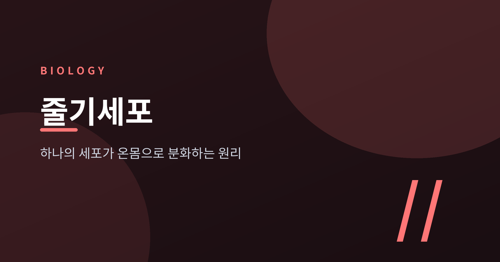
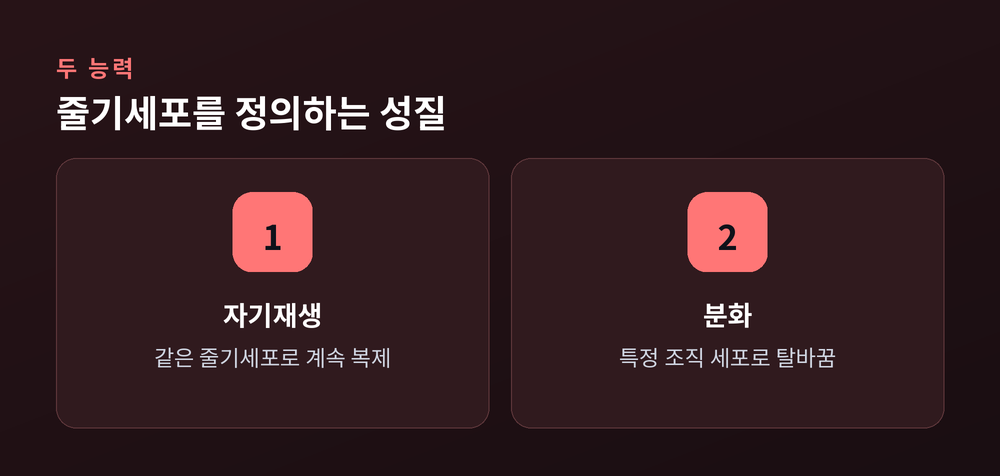
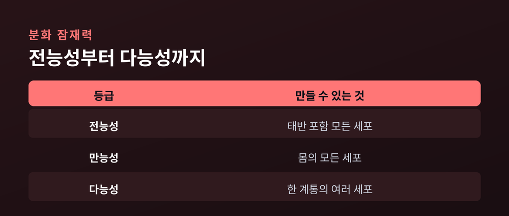
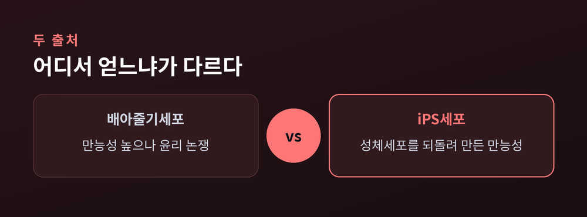
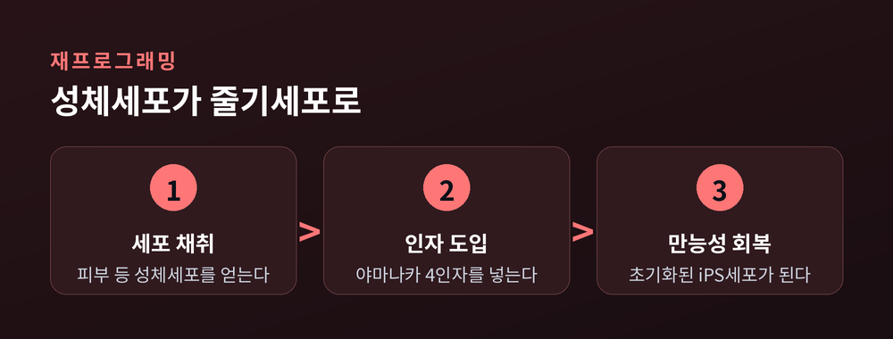

줄기세포란 무엇인가 — 하나의 세포가 온몸으로 분화하는 원리

오늘은 줄기세포에 대해 이야기해 보려 합니다. 세포 하나가 어떻게 뼈도 되고 신경도 되고 혈액도 되는지, 그 분화의 원리를 정리해 보겠습니다. 결론부터 말씀드리면 핵심은 세 가지입니다. 자기재생과 분화라는 두 가지 능력, 그 능력의 등급을 가르는 전능성·만능성·다능성이라는 분류, 그리고 이를 의료에 응용할 때 따라오는 한계와 윤리 논쟁입니다.
줄기세포를 정의하는 두 가지 능력
줄기세포는 특별한 세포가 아닙니다. 정확히는, 두 가지 능력을 함께 가진 세포를 줄기세포라 부릅니다.
하나는 자기재생입니다. 분열을 해도 자신을 다시 만들어내는 능력입니다. 딸세포 중 하나가 다시 줄기세포로 남기 때문에, 줄기세포 집단은 쉽게 고갈되지 않습니다.
다른 하나는 분화입니다. 조건이 맞으면 더 성숙한 세포, 즉 특정 조직에 필요한 세포로 탈바꿈하는 능력입니다.
두 능력은 한 번의 분열 안에서 동시에 일어나기도 합니다. 세포가 나뉠 때 방추사와 중심체가 한쪽으로 쏠리면서, 두 딸세포가 서로 다른 운명 결정 인자를 나눠 가집니다. 한쪽은 줄기세포로 남고, 다른 쪽은 분화의 길로 들어섭니다. 이를 비대칭 분열이라 합니다.

분화 잠재력의 등급 — 전능성, 만능성, 다능성
줄기세포라고 다 같은 줄기세포는 아닙니다. 무엇으로 변할 수 있는지, 그 범위가 세포마다 다릅니다.
가장 넓은 잠재력을 가진 것이 전능성입니다. 태반 같은 배아 밖 조직까지 포함해, 몸의 모든 세포를 만들어낼 수 있습니다. 수정란과 초기 분열기의 세포가 여기 해당합니다.
그다음이 만능성입니다. 외배엽, 중배엽, 내배엽 세 가지 배엽에서 나오는 다양한 세포로 분화할 수 있지만, 태반 같은 배아 밖 조직은 만들지 못합니다. 배아줄기세포와 뒤에서 다룰 iPS세포가 이 범주입니다.
가장 좁은 것이 다능성입니다. 최소 두 가지 세포 계통으로는 분화하지만, 보통 같은 배엽 안에서만 움직입니다. 조혈모세포가 대표적입니다. 혈액 안의 여러 혈구는 만들어도 신경세포는 만들지 못합니다.

정리하면 전능성, 만능성, 다능성 순으로 잠재력의 폭이 좁아지는 셈입니다.
어디서 얻는가 — 배아줄기세포와 성체줄기세포, 그리고 iPS세포
줄기세포를 어디서 얻느냐에 따라 이야기가 완전히 달라집니다.
배아줄기세포는 발생 초기 단계인 배반포에서 얻습니다. 만능성을 지녀 분화 범위가 넓고, 조건만 맞으면 이론상 무한히 자기 복제할 수 있습니다. 문제는 배아를 파괴해야 얻을 수 있다는 점입니다. 미분화 세포가 남으면 세 배엽 조직이 뒤섞인 양성 종양, 기형종을 만들 위험도 있습니다.
성체줄기세포는 다릅니다. 몸속 특정 조직 안에 이미 자리 잡고 있습니다. 조혈모세포는 혈액세포로, 신경줄기세포는 뇌 일부 세포로, 근육위성세포는 근육으로 분화합니다. 대체로 다능성 수준이라 분화 범위는 좁고 자기재생 능력도 배아줄기세포보다 떨어집니다. 채취에 침습적 시술이 필요하다는 점도 걸립니다. 다만 윤리적 부담은 훨씬 적습니다.
예전엔 만능성을 가진 줄기세포를 구하려면 배아를 쓰는 수밖에 없었습니다. 지금은 다릅니다. 성체세포를 되돌려 만능성을 되찾게 만드는 iPS세포, 즉 유도만능줄기세포가 있습니다.

성체세포를 되돌리다 — 야마나카 인자와 재프로그래밍
2006년, 야마나카 신야 연구팀은 놀라운 사실을 보고했습니다. 성체 피부세포에 특정 유전자 몇 개만 넣어도 배아줄기세포와 비슷한 만능성 상태로 되돌릴 수 있다는 것이었습니다.
과정은 이렇습니다. 먼저 피부 등에서 성체세포를 채취합니다. 여기에 OCT3/4, SOX2, KLF4, MYC라는 네 가지 전사인자, 이른바 야마나카 4인자를 도입합니다. 연구팀은 애초 24개의 후보 인자를 추려 하나씩 시험했는데, 어느 하나만으로는 소용이 없었습니다. 네 가지를 함께 넣었을 때 비로소 세포가 초기화되어 iPS세포, 즉 만능성을 되찾은 세포로 바뀌었습니다.

이 공로로 야마나카는 2012년 존 거던과 노벨 생리의학상을 함께 받았습니다. 거던은 앞서 개구리 체세포의 핵을 난자에 이식해 복제 올챙이를 만들어, 이미 성숙한 세포도 발생 초기 상태로 되돌릴 수 있다는 것을 보여준 바 있습니다.
iPS세포의 강점은 분명합니다. 배아를 쓰지 않고 환자 본인의 세포로 만들 수 있어, 윤리적 부담과 면역 거부 문제를 동시에 줄일 여지가 있습니다. 몸의 거의 모든 세포 유형으로 발달할 잠재력을 지녀, 질병 모델링과 신약 개발, 세포 치료의 핵심 도구로 쓰이고 있습니다.
실제로 어떻게 쓰이나 — 재생의료의 응용
줄기세포를 이용한 치료 가운데 가장 오래되고 확립된 방법은 조혈모세포 이식입니다. 흔히 골수 이식이라 부르는 그 치료입니다.
과정은 다음과 같습니다. 고용량 화학요법이나 방사선치료로 환자의 손상된 골수세포를 먼저 제거합니다. 그다음 골수, 말초혈액, 제대혈 중 한 곳에서 채취한 건강한 조혈모세포를 이식합니다. 공여자와 수혜자의 인체 백혈구 항원을 맞춰 거부반응 위험을 낮추는 과정도 필요합니다. 이식된 세포는 혈류를 타고 골수로 이동해 자리를 잡고, 다시 적혈구와 백혈구와 혈소판을 만들기 시작합니다.
최근에는 iPS세포와 배아줄기세포를 이용한 임상도 여러 분야에서 진행되고 있습니다. iPS세포 유래 망막색소상피 세포를 이식하는 황반변성 임상은 2상·3상 단계까지 나아갔고, 일부 환자에게서 시력 개선이 보고됐습니다. 파킨슨병에서는 도파민을 만드는 신경전구세포를 이식하는 1상 임상이 여러 건 승인받아 진행 중이며, 운동 기능이 나아진 사례도 있습니다. 척수손상 분야에서는 일본 게이오대 연구팀이 손상 직후 iPS세포 유래 신경줄기세포를 이식했고, 참가자 절반에서 운동 기능 회복이 관찰됐습니다.
아직 넘지 못한 벽 — 한계와 윤리 논쟁
기대가 큰 만큼 넘어야 할 벽도 뚜렷합니다.
가장 큰 문제는 종양 형성 위험입니다. 이식한 세포 중 미분화 상태로 남은 것이 있으면 기형종을 만들 수 있습니다. 100건이 넘는 만능줄기세포 기반 임상이 진행됐지만, 이 문제는 여전히 해결 과제로 남아 있습니다. 면역 거부반응도 걸림돌입니다. 다른 사람의 세포를 이식하면 거부반응이나 이식편대숙주병이 생길 수 있어, 최근에는 유전자 가위로 면역 인식 유전자를 제거한 세포주를 만드는 연구가 진행되고 있습니다. 이식 세포가 목표 조직에 완전히 자리 잡지 못하거나 생존율이 낮다는 점, 장기 안전성이 아직 충분히 검증되지 않았다는 점도 남은 숙제입니다.
윤리 논쟁은 배아줄기세포에서 특히 첨예합니다. 배반포 단계의 배아를 파괴해 세포를 얻는다는 사실 자체가 배아의 도덕적 지위를 어떻게 볼 것인가라는 근본적 질문으로 이어지기 때문입니다. 오랫동안 여러 나라는 수정 후 14일까지만 배아 연구를 허용하는 '14일 규칙'을 지켜왔습니다. 그런데 2021년, 국제줄기세포연구학회는 이 규칙을 완화해 연구 목적에 따라 14일을 넘는 배양도 사례별로 심사해 검토할 수 있도록 지침을 바꿨습니다. 발생 과정을 더 오래 관찰할 수 있다면 유산이나 선천적 기형의 원인을 이해하는 데 도움이 되리라는 것이 완화의 근거였습니다.
다만 이 결정에 모두가 동의하는 것은 아닙니다. 배아의 도덕적 지위를 이유로 신중해야 한다는 목소리도 여전합니다. 어느 쪽이 옳다고 단정할 수는 없습니다. 각국의 규제도 아직 하나로 모이지 않았습니다.
정리하면 이렇습니다. 줄기세포는 자기재생과 분화라는 두 능력을 가진 세포이고, 그 잠재력은 전능성에서 다능성까지 등급이 나뉩니다. 어디서 얻느냐에 따라 배아줄기세포, 성체줄기세포, iPS세포로 나뉘며, 각각 장단점이 뚜렷합니다. 조혈모세포 이식처럼 이미 확립된 치료도 있지만, 종양 위험과 면역 거부, 배아를 둘러싼 윤리 논쟁처럼 아직 풀리지 않은 문제도 함께 있습니다.
"하나의 세포가 온몸이 될 수 있다는 것" — 그 가능성과 책임을 함께 보는 시선이 필요하다고 생각합니다.
줄기세포가 언젠가 모든 병을 고칠 열쇠가 되겠냐고 물으신다면, 아직은 조심스럽게 지켜볼 때라고 답하겠습니다.